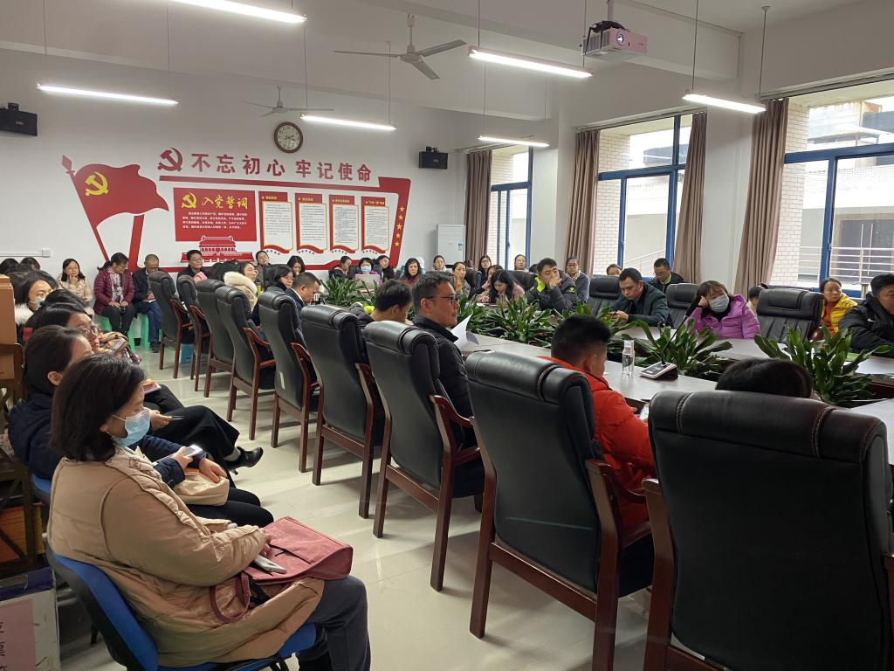
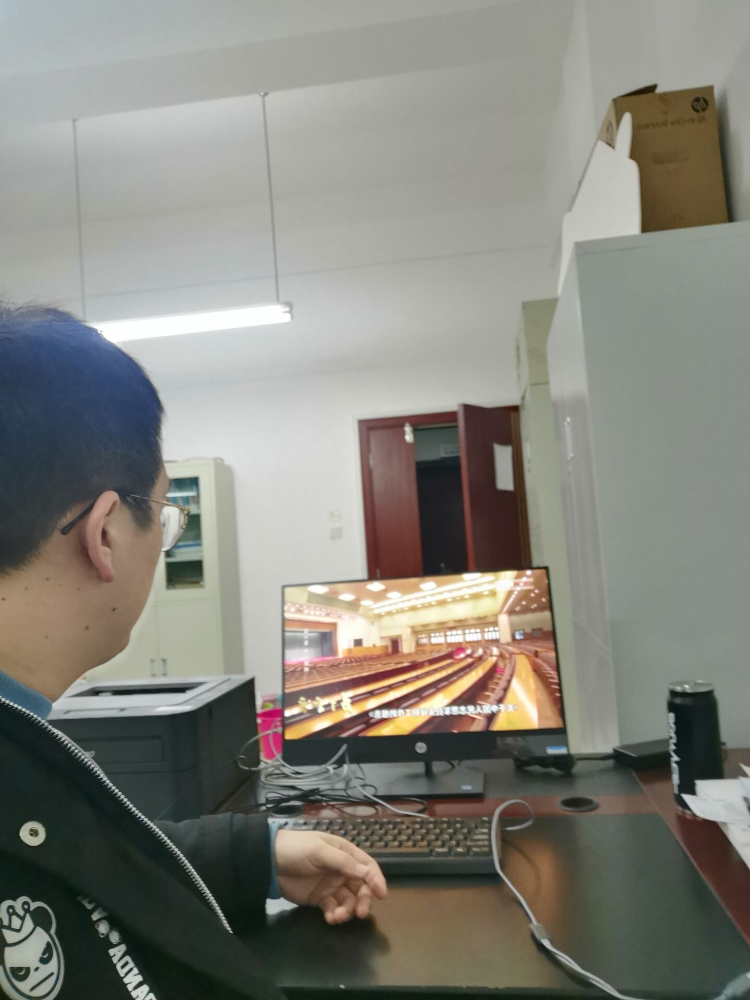
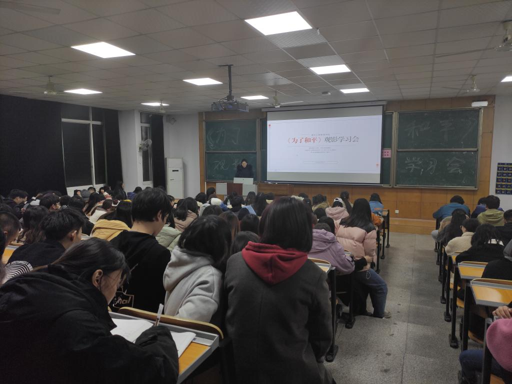
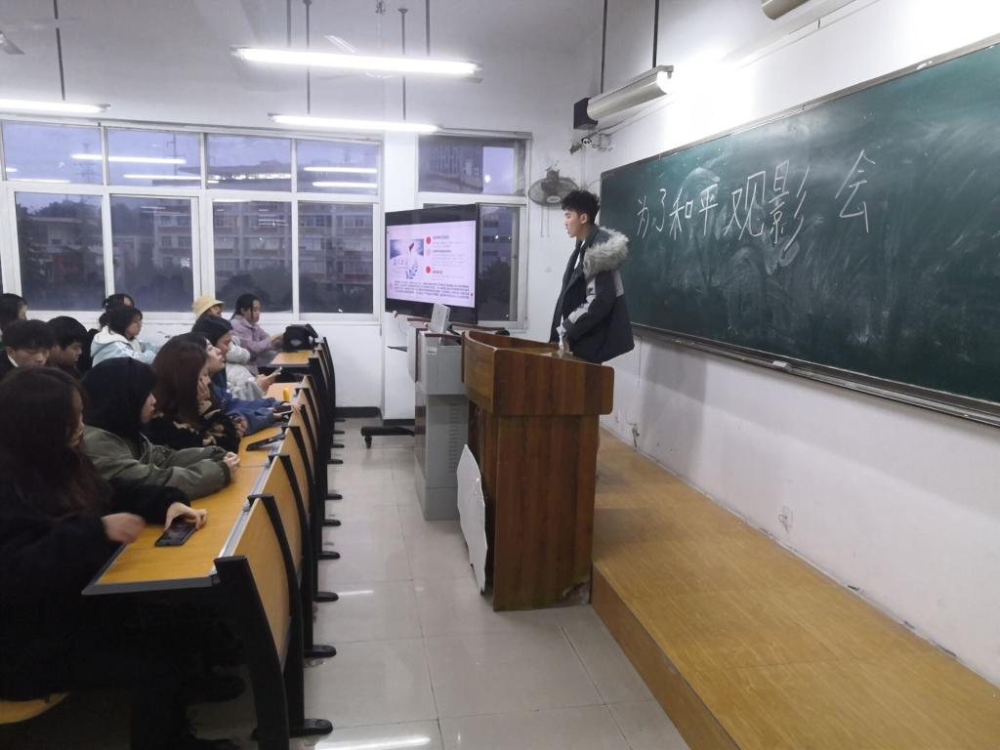
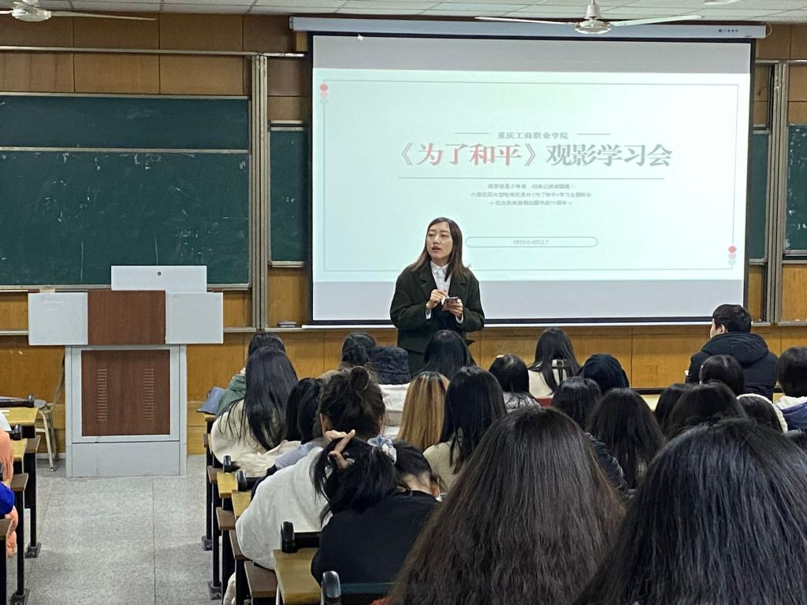

【供稿/各党总支】今年是中国人民志愿军抗美援朝出国作战70周年。为深入贯彻落实习近平总书记在纪念中国人民志愿军抗美援朝出国作战70周年大会上的重要讲话精神，进一步加强教师“四史”学习教育和思想政治教育，营造弘扬伟大抗美援朝精神，矢志奋斗奉献的良好氛围，我校组织全体教师于近期观看了大型纪录片《为了和平》。
该片由中央军委政治工作部宣传局、国家广播电视总局宣传司、中央广播电视总台总编室出品，通过6集的时长全面回顾了抗美援朝战争的光辉历程，集中展现了伟大抗美援朝精神的丰富内涵与时代价值，深刻展示了中国人民志愿军的英雄事迹与革命精神。
一个个曾经浴血奋战的响亮名字，一场场惊心动魄的战役，鲜活的影像资料激发起了全体教师用情用心用力做好“立足中国又面向世界”的爱国主义教育情怀，大家无不深受感动，纷纷表示，在今后的工作中，要大力弘扬伟大抗美援朝精神，以更加积极进取、奋发有为的精神姿态，攻坚克难、化危为机，全力以赴高质量完成全年各项目标任务。
创新教育学院对外文化教育教研室李炳樟老师谈道，无论遇到任何艰难险阻，风险挑战，中国人民不畏强暴，维护世界和平的决心意志，从未改变，历久弥坚，中国人民热爱和平、珍惜和平，把维护世界和平，反对霸权主义和强权政治作为神圣职责，绝不屈服于任何外来压力，这是我们的民族品质，是国家精神。理工教研室张静老师表示，抗美援朝是中国在近百年凌辱历史上反抗西方帝国主义侵略的伟大胜利，极大地增强了民族自信心和中国共产党的凝聚力。任何民族在走向复兴的道路上，没有精神的复兴是不可能的，抗美援朝战争为中华民族的复兴和强大提供了最有力的精神支持。
在研讨中，机关一党总支方慧老师表示，能战方能止战。抗美援朝战争是新中国诞生以后的第一战，打出了军威，打出了国威。缅怀在朝鲜半岛献出宝贵生命的那些最可爱的灵魂，就要继承和发扬抗美援朝精神，勠力同心，在新时代新发展新格局中沉心定气，奋发有为，为实现中华民族伟大复兴的中国梦作出自己应有的贡献。汪洋老师谈道，战争是一面镜子，能让人更深刻地认识和平的珍贵。对历史的最好纪念，就是创造新的历史。中流击水，奋楫争先，中国的昨天已经写在人类的史册上，中国的今天正在亿万人民手中创造，中国的明天必将更加美好。
马克思主义学院毛泽东思想与中国特色社会主义理论体系概论教研室刘娅茜老师认为，纪念中国人民志愿军抗美援朝70周年，就是要大力学习和弘扬伟大的抗美援朝精神，继续发扬全国人民和志愿军在抗美援朝中表现出来的反对霸权主义、维护世界和平的坚定立场。陈科老师表示，对于新中国来说，伟大的抗美援朝战争必将永彪史册，万古流芳。这场战争的胜利充分表明中国人民不畏强暴、敢打必胜的信心和勇气，中华民族这种传统的爱国主义精神和英雄主义气概是我们民族精神之魂。
智能制造与汽车学院新进教师范英杰表示，志愿军战士装备、补给等远比不上美军，为何还能在异国战场赢得战争胜利？这是因为在这场战争中，所有人心中都拥有为了和平的信念。为了和平，党中央在新中国刚刚建立、国家百废待兴之时集结近300万军队出征朝鲜打一场正义之战；为了和平，志愿军战士舍家赴朝，保家卫国，雄赳赳气昂昂跨过鸭绿江，义无反顾；为了和平，19万多志愿军英烈视死如归、血洒疆场，杨根思怀抱炸药包冲向敌群，黄继光舍身堵机枪眼，邱少云以生命诠释纪律高于一切……毫不夸张地说，这世上本没有神迹，如果有，那也是这样的信念所筑而成。
通过交流观影感悟，全体教师回望了抗美援朝历史、对保家卫国有了更加深刻的认识。中国人民热爱和平，但是为了保卫和平，从不也永不害怕反抗侵略战争。大家一致认为，当今和平来之不易，作为教师，要传承好爱国主义精神，肩负好立德树人使命，为国育人、为党育才。
除集体观看大型纪录片《为了和平》外，各党总支根据学校《关于认真做好“网上重走长征路”暨推动“四史”学习教育的通知》文件精神，组织教师深入开展“网上重走长征路”暨推动“四史”学习教育竞答活动，新进教师特设党支部也于近期组织抗美援朝影片《金刚川》观影活动，充分利用纪念中国人民志愿军抗美援朝出国作战70周年重要契机，大力弘扬伟大的抗美援朝精神，加强新时代爱国主义教育，教育引导广大师生厚植爱国主义情怀。




